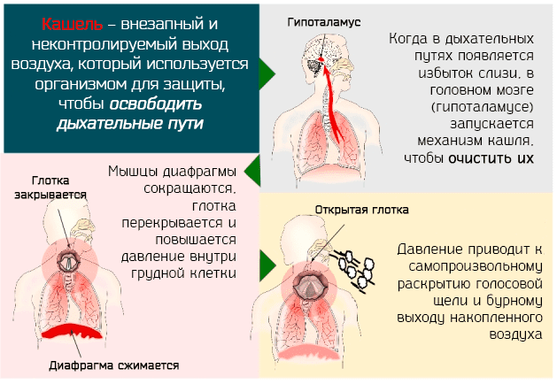

Вслед за температурой список причин, по которым родители звонят врачу, возглавляет кашель. Кашель ставит две проблемы: он доставляет неудобство, зачастую не давая спать ни ребенку, ни остальным, и сигнализирует, что в легких происходит что-то нехорошее. Обратите внимание на следующие советы по борьбе с кашлем.

Беспокойство по поводу кашля
Когда беспокоиться не стоит:
• У ребенка нет температуры, и он выглядит здоровым.
• Ребенок кашляет в течение дня, но ночью хорошо спит.
• Кашель не мешает ребенку есть, играть или спать.
• Кашель постепенно сходит на нет.
Когда вызывать врача:
• Кашель начался внезапно, он безостановочный, и вам кажется, у ребенка могло что-то застрять в горле.
• Кашель будит ребенка по ночам.
• Кашель сопровождается тяжелой аллергией.
• У ребенка также высокая температура, озноб и плохое общее самочувствие.
• Ребенок откашливает густую желто-зеленую слизь.
• Кашель становится все сильнее и сильнее.
Простуда практически всегда вызывает кашель как естественную защитную реакцию организма ребенка, направленную на удаление из дыхательных путей перекрывающей их слизи. Кашель делится на три категории: умный кашель, приносящий проблемы кашель и кашель, требующий внимания врача. Если ваш ребенок простудился и у него раздраженный, навязчивый кашель, но при этом он хорошо ест, играет и спит, не нужно ни беспокоиться, ни лечить его. Если ребенок хорошо чувствует себя в течение дня, но кашель не дает ему спать днем и ночью, такой кашель приносит проблемы и требует лечения. Если кашель сопровождается высокой температурой, учащенным сердцебиением, вялостью, рвотой или откашливанием зеленой массы, это уже кашель, требующий внимания врача.
Прошла неделя или две после того, как прочистился нос, а кашель все не проходит, доставляя неприятности и ребенку, и всей семье. В большинстве случаев неотвязный кашель вызывается не желающими уходить вирусами, особенно если мать говорит: «Он ведет себя как совершенно здоровый, и кашель не беспокоит его, он просто никак не пройдет». Список причин хронического кашля возглавляют аллергии, особенно если кашель сопровождается другими признаками аллергии: насморк, припухшие глаза, хрипы. (См. «Выявление и лечение дыхательной аллергии».) Не забывайте, что скрытой причиной безостановочного кашля может быть инородное тело, попавшее в дыхательные пути. Всякий кашель, если он держится более двух недель, заслуживает осмотра врача.
Кашель, возникающий при обычных острых респираторных заболеваниях, редко бывает заразен по истечении первых трех-четырех дней болезни, особенно если ребенок чувствует себя хорошо.
Марта, Уильям, Роберт, Джеймс Сирс"Ваш малыш от рождения до двух лет"